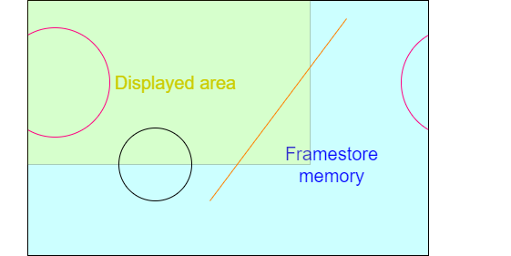

Historically derived from Cathode Ray Tube (CRT) technology.
A CRT scanned the display incessantly, so needed a real time stream of pixel data.
Although in principle LCDs could be ‘abused’ here, the standard interface has been retained.
For many decades televisions were analogue devices which worked as follows:
For a television it is important that the picture is displayed at the same rate as it is broadcast! To achieve this, synchronisation signals are sent to initiate each fly-back. The display has Phase-Locked Loops (PLLs) which regulate its scan rates and these are governed by these ‘sync. pulses’. Blanking is initiated some time before the sync. pulse (known as the ‘front porch’) and persists for some time afterwards (the ‘back porch’).
Horizontal and vertical synchronisation is the same, in principle, although the vertical timing is much slower. The interval between vertical syncs. sets the frame rate of the display. Analogue broadcast TV is an old standard and has/had relatively long blanking intervals when compared with the active video time.
CRT computer monitors were derived from TV technology. The more modern devices have proportionately smaller blanking times so most of the time the interface is carrying active (useful) signals, but the principle is the same.
An ageing, though still useful, interface is the VGA, which has analogue signals driving the colour intensities and digital (true/false) sync. indicators.
The use of analogue signals necessitates Digital to Analogue Converters (DACs) for the colour signals and makes electrical noise pick-up more of a problem.
There are various DVI standards: DVI-A is a backward-compatible Analogue interface, DVI-D is the Digital form and DVI-I Integrates the two. In some digital interfaces, having two parallel links improves bandwidth allowing higher definition displays.
As an example, in DVI-D high-speed digital data is conveyed on multiple serial channels. Each channel comprises a Current Mode Logic (CML) twisted-wire differential pair; this helps to improve noise immunity. The data is encoded using a form of 8b/10b encoding.
Data is sent uncompressed and in real time, thus the general pattern of the output scan is similar to that used for earlier displays such as CRTs.
In summary, when sending data across a synchronous serial line it is necessary to include enough information for the receiver to recover the clock (to discriminate between adjacent bits) as well as read the data itself. Clearly a pure binary signal is not adequate as it may consist of many consecutive ‘0’s or consecutive ‘1’s.
Many coding schemes have been devised. The link can only be switched at a certain maximum rate; to get the best useful bandwidth, a scheme needs to provide ‘enough’ information to recover the clock but not so much redundancy that the data rate is compromised.
8b/10b is one such scheme which codes 8 bits of data into 10 bit-time symbols (i.e. has a constant 25% overhead). It was first patented (now expired) by IBM in the 1980s.
An important property is that it has DC balance – meaning that, averaged over time, the symbols contain the same number of ‘0’s and ‘1’s. This requires two possible codes per 8-bit byte.
When symbols with insufficient transitions for clock recovery are discarded there are 268 legal codes, which allows any 8-bit data value to be sent plus allowing some control codes (“K-codes”) for the link (which the user need not know about).
8b/10b is in common use, including for DVI, PCI Express, Infiniband, SATA …
HDMI is basically similar to DVI-D, only providing a single set of digital channels (no analogue). HDMI uses the blanking period between active video scans to encode control and other information, such as audio channels in “data islands”.
The data may be encoded in ways other than RGB (e.g. Y′CbCr).
A single, serial Consumer Electronics Control (CEC) channel is also included to carry data such as that from ‘remote control’ handsets.
With the economic availability of LCD (Liquid Crystal Display) flat-panel displays came a wider range of displays. In particular, the typical aspect ratio of displays has moved from 4:3 to 16:9. Rather than distorting the picture, a better solution is to output the display in an appropriate form but this requires the computer to be aware of the type of display.
The first forms of data sensing merely detected the monitor type. Current communications are more sophisticated with the computer communicating with an embedded controller on the monitor allowing the downloading of information on a monitor's aspect ratio, resolution, orientation et cetera. If you are sufficiently interested you can look up “EDID” (Extended Display Identification Data). With some it is also possible to write commands to the monitor, for instance to control brightness or contrast.
The usual DDC is based on the two-wire I2C bus which allows fairly low bandwidth communication using a bidirectional serial protocol. This only requires a small addition to the connector and wiring requirement.
The information available from a monitor can identify the manufacturer and model as well as the different resolutions which are supported, the timing characteristics, colour resolution etc. There may be a ‘preferred’ mode which the monitor is designed to use.
DisplayPort is a (comparatively) more recent departure; it uses a similar physical interface with sets of differential signals but transmits its data (video, audio & other) as packets rather than a real-time stream.
DisplayPort has been defined so that it can be connected to earlier standards using passive† as well as active translation.
However, we drift from the main topic …
†I.e. an appropriate cable which does not need a power supply.
The VDU controller's job is to:
It is a fairly simple state machine although the various parameters may be programmable for different display hardware and screen resolutions.
Based on a 2D array of memory (frame store) with a ‘numeric’ representation of a pixel's colour.
The display is made of pixels (‘picture elements’) which are ‘dots’; typically these are rectangular and preferably more-or-less square. The screen comprises a 2D array of pixels at a particular resolution (vertical & horizontal).
Each location has an address; this may be a byte, or several
bytes, or even less than a byte.
(The first address does not have to be 0000_0000.)
Each pixel's data represents a colour: e.g. one byte/pixel gives 256 possible colours.
Colours are often separated into Red, Green and Blue intensities.
An LCD has physical pixels which determine its maximum resolution. Lower resolution is possible by shading adjacent groups of pixels in the same way: for example a square of four physical pixels could represent a single logical one. If the mapping is non-integer then some distortion may occur so similar pixels may look slightly different reallly close up. Modern displays have very small pixels so the effect is less noticeable than it once was.
A standard, but now ‘low’, resolution display is the 640×480 VGA (Video Graphics Array). This is specified for the older 4:3 monitor aspect ratio.
The pixel shade/colour is held in a memory called a frame store. Pixels are read successively from the frame store and serialised onto the display. A complete frame refresh is done frequently enough to allow successive frames to give the impression of movement and to avoid disturbing flickering. For computer monitors typical frame rates are in the region 50-100 Hz.
Colour displays are now standard. Each pixel has a colour which is specified by a number of bits. The usual representation for computers is to code intensities of the colours Red, Green and Blue (RGB) separately. This works because human eyes have a limited range of colour sensors; the only colours we actually perceive are centred in these spectral bands and other colours (such as yellow) are perceived from appropriate mixtures of stimuli (red & green for yellow).
The colour outputs are ‘analogue’ (i.e. multi-levelled)
outputs where the number of bits used determines how many shades are
available. Human eyes are not very sensitive to colour intensities so
8 bits per colour is more than adequate (especially for blue, where
perception is worse). Eight bits is, of course, a convenient number
for digital computer implementation.
The conversion from the digital representation was historically done
at the computer ‘end’ but modern interfaces (HDMI etc.)
use digital interfaces and the standard carries eight bits for each
colour.
Having three colours is less convenient, so often the entire pixel is mapped into 32 bits; the extra 8 bits can find other uses which need not concern us.
Note: the traditional address mapping is to have the lowest address at the top-left corner and increment addresses in rows. Thus the x axis runs left to right and the y axis top to bottom. Thus to move right from one pixel address to the next means adding ‘1’ to the address where that ‘1’ is one pixel address. In a typical byte-addressed memory this might, numerically be >b>4 in a ‘full colour’ display, with 32-bits (4 bytes) per pixel.
To move down one pixel (i.e. y := y + 1) requires adding the length of a row (in pixels) to the address. If the frame store width was 1024 pixels, moving down one pixel means adding 4×1024 = 4096 to the address.
To calculate the address of pixel (x, y):
address = screen_start_address + (y × width_in_pixels + x) × bytes_per_pixel
A frame store can be larger than the displayed area, although this may waste some memory. It could be made smaller, too, but that would make little sense!
Typical screen widths (e.g. 640, 1024, 1280) are intended to make these multiplications easy, typically by having factors which are ‘mostly’ powers of 2, which can be simplified to bit shifts. (Note that the ‘y’ coordinate multiplier here refers to the framestore coordinates if they differ from the displayed memory width.)
| Resolution | Aspect ratio | Width, factored | KiPixels |
|---|---|---|---|
| 640×480 | 4:3 | 27 × 5 (= 29 + 27) | 300 |
| 800×600 | 4:3 | 25 × 52 | 468¾ |
| 1024×768 | 4:3 | 210 | 768 |
| 960×540 | 16:9 | 210 − 26 | 506¼ |
| 1280×720 | 16:9 | 28 × 5 | 900 |
| 1600×900 | 16:9 | 28 × 54 | 1406¼ |
| 1920×1080 | 16:9 | 27 × 3 × 5 (= 211 − 27) | 2025 |
Here are some fairly common choices of display resolutions as an illustration.
Note how most width multiplications reduce to simple shift and add/subtract.
For (colour) display output purposes the RGB colour space is usually used. Note that it is not the only way to represent colour images though.
For digital video streams and image compression (e.g. JPEG) other representations, such as YCbCr may be more appropriate. This separates the colour from the intensity. There are a couple of advantages to this.
Frame store can occupy significant memory.
Remember doubling the linear resolution multiplies the number of pixels by four.
Frame store bandwidth is critical.
Although it is not germane to the drawing process, the frame store is also constantly being read by hardware which is updating the display. This shares access to (typically Time Division Multiplexing) the frame store memory. Memory accesses are relatively slow so frame store bandwidth is always an ‘issue’, made worse as the screen resolution increases.
As it has to be shared, the frame store may not be available exactly when you want it. This influences the interface design. The highest priority for access goes to the VDU read-out because if that fails to meet its real-time constraint there will be glitches visible on the screen. More than one other device may share access too: for example in the lab. both the microprocessor and the graphics accelerator compete for the remaining bandwidth.
In a system which may animate a display there is a conflict between using the frame store for what can currently be seen and the future picture under construction. This is typically resolved by double buffering: having a larger-than-needed frame store and displaying from one area whilst drawing in another.
In the absence of dual-port memory the accesses either must interleave in time (a typical solution) or two (smaller) separate and switchable frame store memories are needed (expensive).
Let's take a ‘High Definition’ (HD) display resolution of 1920×1080 pixels with 4 bytes per pixel. This requires 1920×1080×4 = 8294400 bytes of storage.
Rather than reach for a calculator, let's rough it out.
‘Almost 2000’ × ‘just over 1000’ is going to be around two million pixels so we need 2M×4 = 8 MB of frame store.
Let's say† this supports a frame rate of 50 Hz: it has to be copied to the display 50 times a second, so there is a bandwidth requirement of around 400 MB.s-1.
Note: that's megabytes, not megabits. Minimum. It doesn't allow for other data, pauses for blanking, sync. etc.
If you want a bit rate, multiply by 8 and add a bit more for overheads: calling it 4 Gb.s-1 won't be far wrong.
Looked at another way, the pixel rate will be two million times 50 plus whatever the overhead is, so something over 100 MHz – not too scary a frequency on-chip (these days) but quite aggressive on a PCB!
The frame store needs to be read to supply this demand. If a single pixel (32-bit word) were read at this rate the memory would need to cycle in <10 ns; not really feasible for the ‘big’ (multi-megabyte even assuming a single frame store and there could be more than one) memory devices needed. Thus there needs to be a means of increasing the memory bandwidth. Fortunately the read-out patterns are entirely predictable; it's easy enough to read the frame store at many words wide and then serialise this data.
Also note, if implementing animation, at least, there is another bandwidth requirement to allow concurrent writing of the pixels – and a real-time limit too.
†To keep the numbers easy.